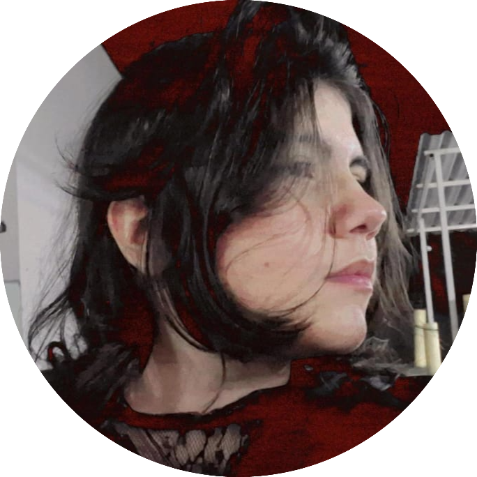

Colaboradores
Bruna Longuim
Estudante do 2° período de Engenharia da Computação, xxxxxxxxx do projeto Farol Universitário.
Estudante do 2° período de Engenharia da Computação, desenvolvedora do projeto Farol Universitário.
Gabriela Sichiroli
Gabriela Sichiroli
Estudante do 2° período de Engenharia da Computação, xxxxxxxxx do projeto Farol Universitário.
Estudante do 2° período de Engenharia da Computação, desenvolvedora do projeto Farol Universitário.
Larissa Monteiro
Larissa Monteiro
Estudante do 2° período de Engenharia da Computação, xxxxxxxxx do projeto Farol Universitário.
Estudante do 2° período de Engenharia da Computação, desenvolvedora do projeto Farol Universitário.
Sabrina Mineiro
Sabrina Mineiro
Estudante do 2° período de Engenharia da Computação, xxxxxxxxx do projeto Farol Universitário.
Estudante do 2° período de Engenharia da Computação, líder do projeto Farol Universitário.
Menção Honrosa
Renatinho
Renatinho
Estudante do 2° período de Engenharia da Computação, grande apoiador do projeto Farol Universitário.
Quem somos?
Somos uma equipe comprometida em criar soluções inovadoras para facilitar a vida dos alunos da PUC Campinas. Nosso projeto tem como principal objetivo oferecer uma plataforma prática e eficiente, onde os estudantes podem acessar informações essenciais sobre a universidade de maneira simples e rápida. Sabemos que a vida universitária pode ser desafiadora, com uma enorme quantidade de dados e oportunidades espalhadas por diferentes canais. Por isso, desenvolvemos esse projeto para centralizar todas as informações mais relevantes, desde programas acadêmicos e bolsas de estudo até eventos e atividades extracurriculares, de forma que o aluno tenha tudo ao seu alcance. Nosso foco é proporcionar aos alunos uma experiência mais fluida e organizada durante sua jornada acadêmica, conectando-os com as oportunidades que podem contribuir para seu crescimento pessoal e profissional. Além disso, buscamos criar uma comunidade onde os estudantes se sintam apoiados e informados, capazes de aproveitar ao máximo as chances de se envolver com a universidade e desenvolver novas habilidades. Em suma, somos uma equipe dedicada a melhorar a experiência dos estudantes da PUC Campinas, tornando a informação mais acessível e a vida universitária mais fácil de navegar. omos uma equipe comprometida em criar soluções inovadoras para facilitar a vida dos alunos da PUC Campinas. Nosso projeto tem como principal objetivo oferecer uma plataforma prática e eficiente, onde os estudantes podem acessar informações essenciais sobre a universidade de maneira simples e rápida. Sabemos que a vida universitária pode ser desafiadora, com uma enorme quantidade de dados e oportunidades espalhadas por diferentes canais. Por isso, desenvolvemos esse projeto para centralizar todas as informações mais relevantes, desde programas acadêmicos e bolsas de estudo até eventos e atividades extracurriculares, de forma que o aluno tenha tudo ao seu alcance. Nosso foco é proporcionar aos alunos uma experiência mais fluida e organizada durante sua jornada acadêmica, conectando-os com as oportunidades quomos uma equipe comprometida em criar soluções inovadoras para facilitar a vida dos alunos da PUC Campinas. Nosso projeto tem como principal objetivo oferecer uma plataforma prática e eficiente, onde os estudantes podem acessar informações essenciais sobre a universidade de maneira simples e rápida. Sabemos que a vida universitária pode ser desafiadora, com uma enorme quantidade de dados e oportunidades espalhadas por diferentes canais. Por isso, desenvolvemos esse projeto para centralizar todas as informações mais relevantes, desde programas acadêmicos e bolsas de estudo até eventos e atividades extracurriculares, de forma que o aluno tenha tudo ao seu alcance. Nosso foco é proporcionar aos alunos uma experiência mais fluida e organizada durante sua jornada acadêmica, conectando-os com as oportunidades qu